Aula 1 - Fundamentos da Óptica Geométrica
Óptica
Objetivos
Ao final desta aula, você deverá ser capaz de:
- Reconhecer a luz visível como parte do espectro eletromagnético e usar \(c\approx3{,}0\times10^8\,\text{m/s}\) no vácuo.
- Diferenciar fontes primárias e secundárias, bem como meios transparentes, translúcidos e opacos.
- Aplicar os princípios de propagação retilínea, reversibilidade e independência dos raios luminosos.
- Explicar sombra, penumbra, eclipses e a formação de imagens na câmara escura.
- Resolver problemas de semelhança de triângulos envolvendo sombras e câmara escura.
- Distinguir síntese aditiva (RGB) de síntese subtrativa (CMY) e prever cores sob iluminação colorida.
Introdução
Óptica é a parte da Física que estuda a luz e os fenômenos associados a ela. Nesta primeira aula, adotaremos o modelo de óptica geométrica: em situações nas quais as dimensões dos objetos são muito maiores que o comprimento de onda da luz, podemos representar sua trajetória por raios luminosos, linhas orientadas que indicam a direção da propagação da energia luminosa.
Esse modelo explica por que vemos através de uma janela, por que uma sombra tem contornos, como ocorrem eclipses e como uma câmara escura forma uma imagem invertida. Também permite compreender cores em telas, tintas, fotografias e objetos iluminados.

Luz visível e unidades astronômicas
A luz visível é radiação eletromagnética detectada pelo olho humano. Seu comprimento de onda está aproximadamente entre \(380\,\text{nm}\) (violeta) e \(750\,\text{nm}\) (vermelho). No vácuo, todas as radiações eletromagnéticas propagam-se com velocidade
\[ \boxed{c\approx3{,}0\times10^8\,\text{m/s}} \]
Em materiais transparentes, a velocidade é menor que \(c\). A cor não é definida apenas pelo objeto: depende também da luz que o ilumina e da resposta do nosso sistema visual.
Como as distâncias entre estrelas são muito grandes, usamos o ano-luz (al): a distância percorrida pela luz no vácuo durante um ano.
\[ 1\,\text{al}\approx9{,}46\times10^{12}\,\text{km} \]
Esse valor pode ser obtido com \(d=v\Delta t\). Adotando \(1\,\text{ano}\approx3{,}156\times10^7\,\text{s}\):
\[ d=(3{,}0\times10^5\,\text{km/s})(3{,}156\times10^7\,\text{s}) \approx9{,}46\times10^{12}\,\text{km}. \]
Portanto, ano-luz é unidade de distância, apesar de seu nome conter a palavra “ano”. Algumas escalas ajudam a interpretar essa unidade:
- Terra–Lua: aproximadamente \(1{,}28\) segundo-luz;
- Sol–Terra: aproximadamente \(8{,}3\) minutos-luz;
- Proxima Centauri–Terra: aproximadamente \(4{,}24\) anos-luz.
O parsec (pc) é outra unidade astronômica, definida a partir da paralaxe. A relação útil nesta aula é:
\[ \boxed{1\,\text{pc}\approx3{,}26\,\text{al}\approx3{,}09\times10^{13}\,\text{km}} \]
Exemplo. A luz do Sol leva cerca de \(8{,}3\,\text{min}\) para chegar à Terra. Logo, observar o Sol é vê-lo como ele era há pouco mais de oito minutos, não exatamente como ele é neste instante.
Conversões astronômicas
Para converter unidades, escreva uma razão igual a 1 e cancele a unidade indesejada.
Exemplo 1 — de ano-luz para quilômetro. Alpha Centauri A está a aproximadamente \(4{,}37\,\text{al}\) da Terra:
\[ d=4{,}37\,\bcancel{\text{al}} \left(\frac{9{,}46\times10^{12}\,\text{km}}{1\,\bcancel{\text{al}}}\right) \approx\boxed{4{,}13\times10^{13}\,\text{km}}. \]
Exemplo 2 — de parsec para ano-luz e quilômetro. Para uma estrela a \(430\,\text{pc}\):
\[ d=430\,\bcancel{\text{pc}} \left(\frac{3{,}26\,\text{al}}{1\,\bcancel{\text{pc}}}\right) \approx1{,}40\times10^3\,\text{al} \approx\boxed{1{,}33\times10^{16}\,\text{km}}. \]
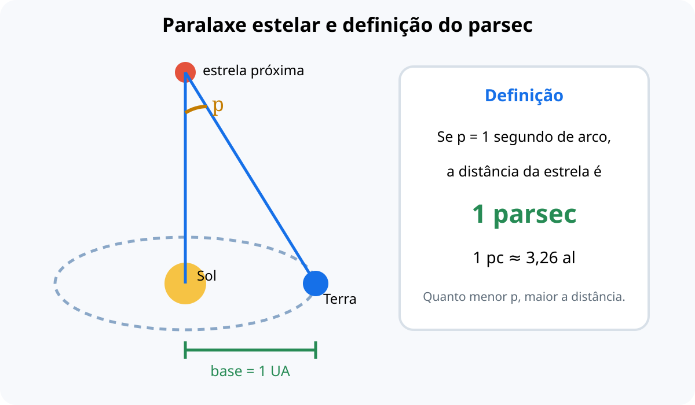
Exemplo 3 — tempo de viagem. Uma nave hipotética viaja a \(1{,}5\times10^3\,\text{km/s}\) até Proxima Centauri b, a \(4{,}24\,\text{al}\). Como essa velocidade é \(200\) vezes menor que \(c\approx3{,}0\times10^5\,\text{km/s}\), o tempo de viagem é
\[ \Delta t=4{,}24\,\text{anos}\left(\frac{3{,}0\times10^5}{1{,}5\times10^3}\right) =\boxed{848\,\text{anos}}. \]
Esse cálculo desconsidera aceleração, frenagem e efeitos relativísticos; trata-se de uma estimativa com velocidade constante.
Fontes e feixes de luz
Uma fonte primária emite luz própria: Sol, chama, lâmpada acesa, tela ligada e vaga-lume. Uma fonte secundária não produz luz própria; ela é vista porque reflete ou espalha luz recebida, como a Lua, um livro e uma parede.
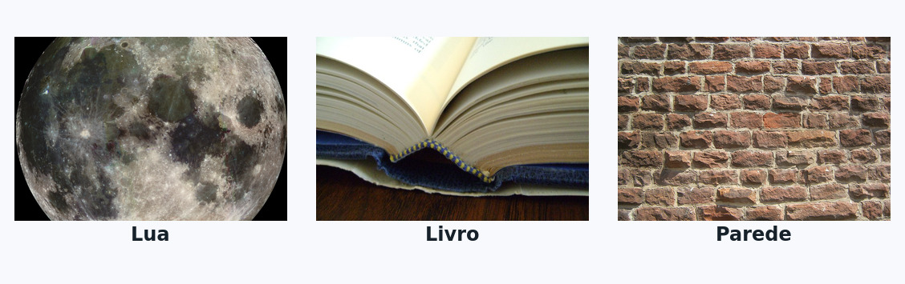
Não confunda uma fonte quente com uma fonte luminosa: uma pessoa pode emitir radiação infravermelha por estar quente, mas não necessariamente luz visível suficiente para ser vista no escuro.
As fontes primárias também podem ser classificadas pelo mecanismo de emissão. Nos exemplos a seguir, cada conjunto reúne apenas fontes que funcionam pelo mesmo fenômeno.
Fontes incandescentes
Emitem luz visível por causa da alta temperatura. O Sol, uma chama, uma brasa e o filamento aquecido de uma lâmpada incandescente são exemplos.
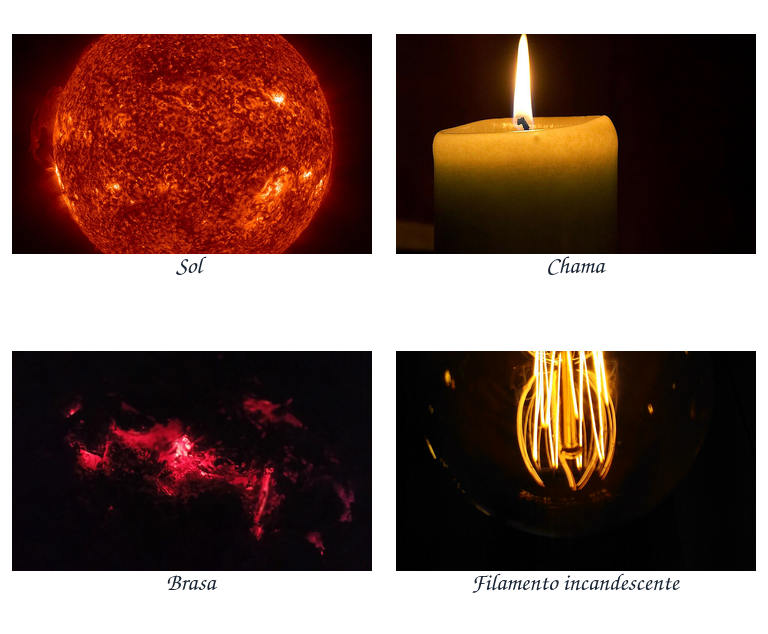
Fontes fluorescentes
Emitem luz enquanto recebem energia de excitação e, em geral, deixam de emitir quase imediatamente quando o estímulo termina. Lâmpadas fluorescentes possuem vapor de mercúrio que produz radiação ultravioleta; o revestimento interno do tubo absorve essa radiação e emite luz visível.
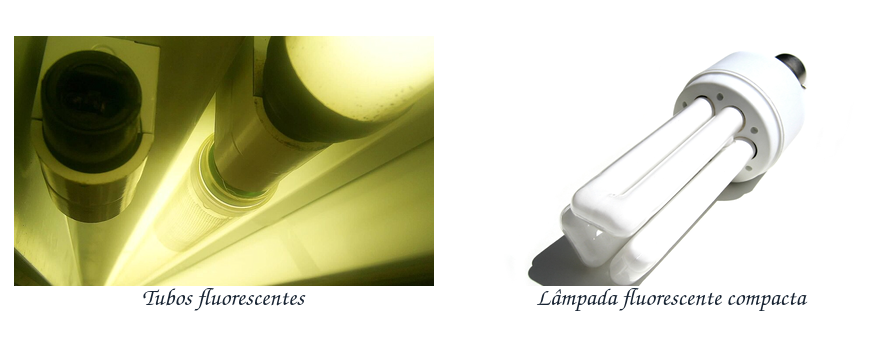
Fontes fosforescentes
Continuam emitindo luz por algum tempo depois que a excitação termina. Pigmentos de placas, ponteiros e adesivos que brilham no escuro armazenam parte da energia recebida e a liberam gradualmente.
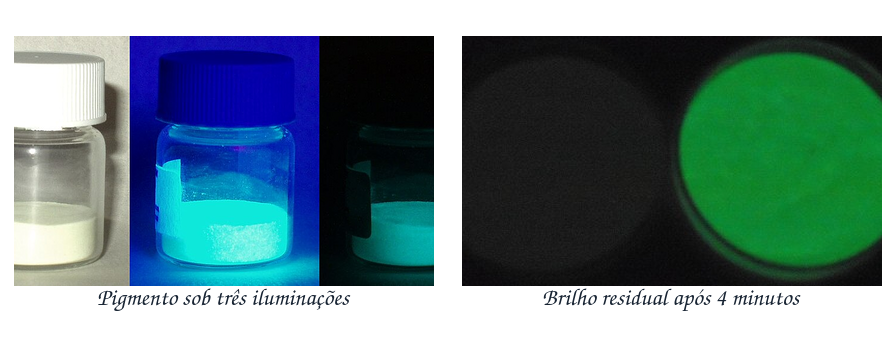
Fontes quimioluminescentes
Convertem diretamente a energia de uma reação química em luz, com pouca produção de calor. O luminol e os bastões luminosos são exemplos.
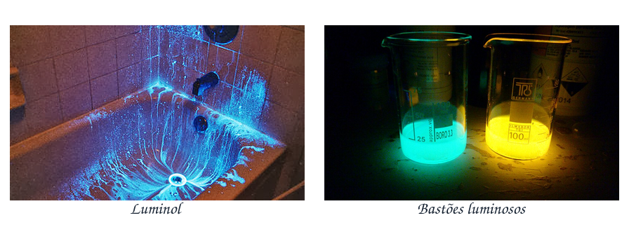
Fontes bioluminescentes
São fontes quimioluminescentes presentes em seres vivos. Vaga-lumes e certos organismos marinhos produzem luz por reações bioquímicas.
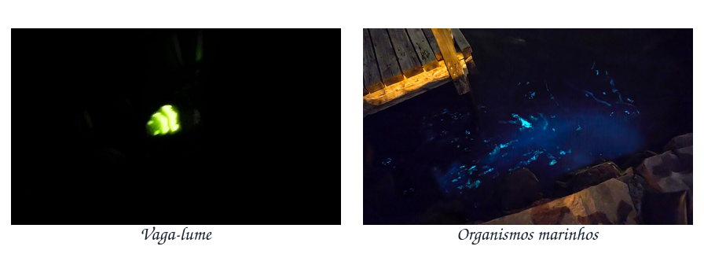
Quanto à geometria, um feixe pode ser:
- paralelo, com raios aproximadamente paralelos, como os raios solares em uma pequena região da Terra;
- divergente, com raios que se afastam, como os que saem de uma lâmpada pequena;
- convergente, com raios que se aproximam de uma região, como após uma lente convergente.
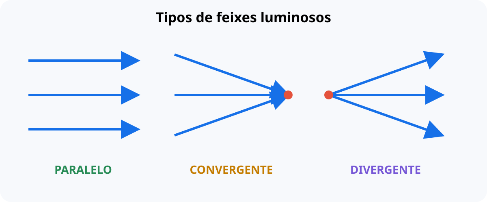
Quanto às dimensões, uma fonte pode ser considerada pontual quando seu tamanho aparente é desprezível na situação analisada. Caso seu tamanho precise ser levado em conta, ela é extensa. Essa classificação depende do problema: uma lâmpada distante pode ser aproximadamente pontual, mas a mesma lâmpada, observada de perto, é extensa.
Meios de propagação
Os materiais podem ser classificados de acordo com a passagem e o espalhamento da luz.
- Transparente
- permite passagem regular da luz e visão nítida, como ar limpo, água limpa e vidro comum.
- Translúcido
- permite passagem de luz, mas a espalha; há claridade, porém sem imagem nítida, como vidro fosco, papel vegetal e neblina.
- Opaco
- não permite a passagem da luz através de sua espessura; a luz pode ser absorvida e/ou refletida, como em madeira, metal e paredes.
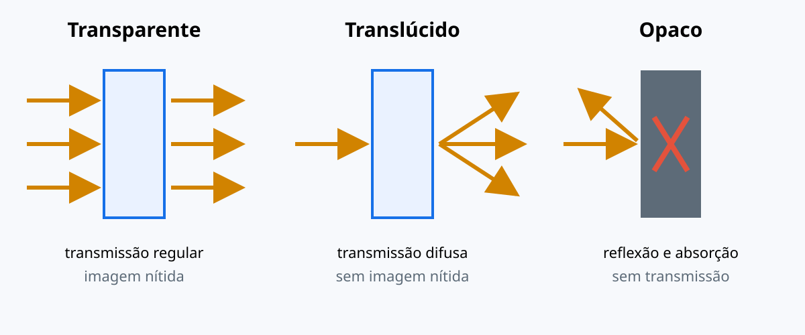
Princípios da óptica geométrica
Propagação retilínea
Em meio homogêneo e transparente, a luz se propaga em linha reta. É uma aproximação muito útil: ao mudar de meio ou atravessar uma região não homogênea, a direção pode mudar por refração.
Reversibilidade
Se um raio pode seguir de A até B por determinado caminho óptico, ele também pode percorrer o mesmo caminho de B até A, no sentido inverso. Esse princípio é usado ao traçar raios em espelhos, lentes e instrumentos ópticos.
Independência dos raios
No modelo geométrico usual, raios luminosos podem se cruzar sem desviar uns aos outros. Uma lanterna não impede a luz de outra lanterna de seguir seu caminho.
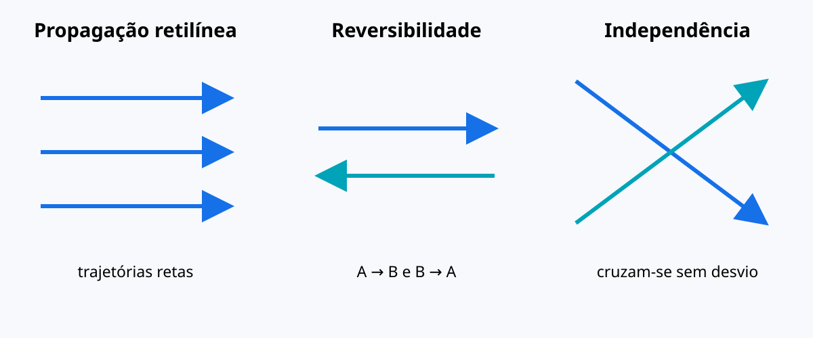
Sombra, penumbra e eclipses
Uma fonte aproximadamente pontual produz uma região de sombra com contorno bem definido: nela não chega luz da fonte. Já uma fonte extensa produz, além da sombra total, a penumbra, região que recebe luz apenas de parte da fonte.
Na região de umbra, toda a fonte é encoberta. Na penumbra, somente uma parte dela é encoberta. Quando existe uma região além do término da umbra na qual a fonte extensa aparece parcialmente contornada pelo obstáculo, ela é chamada antumbra; é nessa região que pode ser observado um eclipse solar anular.

Os eclipses são aplicações diretas da propagação retilínea:
- No eclipse solar, a Lua fica entre o Sol e uma região da Terra. Quem está na umbra observa eclipse total; quem está na penumbra observa eclipse parcial.
- No eclipse lunar, a Terra fica entre o Sol e a Lua, projetando sua sombra sobre a Lua.

Semelhança de triângulos nas sombras
Quando os raios solares são considerados paralelos, os triângulos formados pelo objeto e sua sombra são semelhantes. Assim,
\[ \frac{H}{h}=\frac{S}{s} \]
em que \(H\) e \(S\) são altura e sombra do objeto maior, e \(h\) e \(s\) as do objeto de referência.
Exemplo. Um poste de \(2{,}0\,\text{m}\) projeta sombra de \(1{,}5\,\text{m}\). Ao mesmo tempo, uma árvore projeta sombra de \(9{,}0\,\text{m}\). Então:
\[ H=2{,}0\cdot\frac{9{,}0}{1{,}5}=\boxed{12\,\text{m}}. \]
Fonte pontual e ampliação da sombra
Quando a fonte está próxima, seus raios são divergentes e a sombra pode ficar maior que o objeto. Considere uma lâmpada puntiforme no teto, a \(3{,}0\,\text{m}\) do piso, e uma mesa quadrada de lado \(0{,}40\,\text{m}\), cujo tampo está a \(1{,}0\,\text{m}\) do piso. A distância da lâmpada ao tampo é \(2{,}0\,\text{m}\). Pela semelhança dos triângulos,
\[ \frac{L}{0{,}40}=\frac{3{,}0}{2{,}0} \qquad\Rightarrow\qquad L=0{,}60\,\text{m}. \]
A área da sombra no piso será
\[ A=L^2=(0{,}60)^2=\boxed{0{,}36\,\text{m}^2}. \]
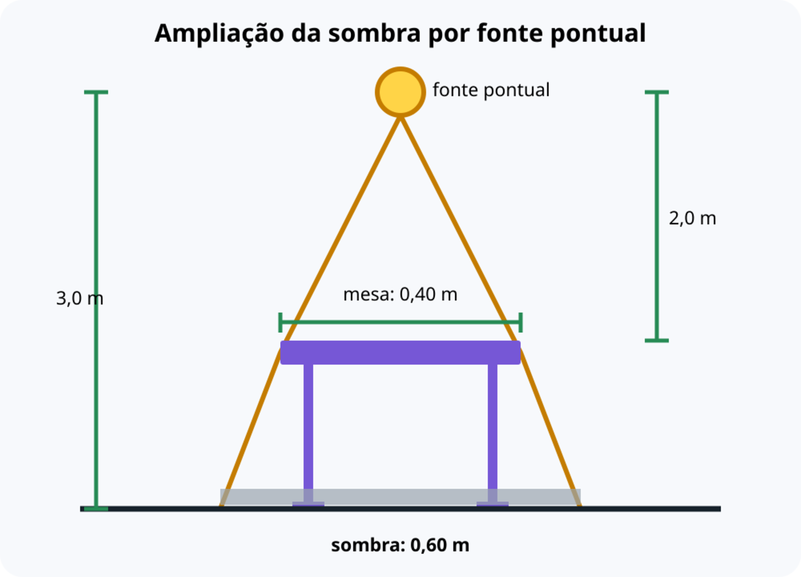
Câmara escura de orifício
Uma câmara escura é uma caixa vedada com um pequeno orifício em uma face e um anteparo na face oposta. Raios provenientes da parte superior do objeto chegam à parte inferior do anteparo, e vice-versa. Por isso, a imagem é real e invertida.

Pela semelhança de triângulos:
\[ \boxed{\frac{i}{o}=\frac{p'}{p}} \]
em que \(i\) é a altura da imagem, \(o\) a altura do objeto, \(p'\) a distância do orifício ao anteparo e \(p\) a distância do objeto ao orifício. As grandezas devem estar na mesma unidade.
Exemplo. Uma pessoa de \(1{,}80\,\text{m}\) está a \(6{,}0\,\text{m}\) do orifício de uma câmara com \(p'=0{,}20\,\text{m}\). A altura da imagem é:
\[ i=1{,}80\cdot\frac{0{,}20}{6{,}0}=0{,}060\,\text{m}=\boxed{6{,}0\,\text{cm}}. \]
Quanto menor o orifício, mais nítida tende a ser a imagem; se for pequeno demais, entra pouca luz e a imagem fica escura. A abertura ideal equilibra nitidez e luminosidade.
Observe também como a equação permite prever mudanças: mantendo o objeto parado, aumentar \(p'\) aumenta a imagem; mantendo a câmara fixa, aproximar o objeto — diminuir \(p\) — também aumenta a imagem.
Cores: luz, pigmento e iluminação
Em telas, usamos síntese aditiva: as luzes primárias são vermelho (R), verde (G) e azul (B). A soma de R, G e B intensos produz luz branca. Por exemplo, verde + azul produz ciano.
Em tintas e impressões, usamos uma aproximação de síntese subtrativa: os pigmentos ciano (C), magenta (M) e amarelo (Y) absorvem parte da luz branca e refletem o restante. Ciano + amarelo refletem principalmente verde; na impressão real, adiciona-se preto (K) para melhorar contraste e economia de tinta.


Um objeto vermelho iluminado por luz branca reflete principalmente vermelho. Se for iluminado apenas por luz azul, quase não há vermelho para refletir e ele tende a parecer escuro. Portanto, cor percebida é resultado de iluminação + propriedades do material + visão.
Quadro de misturas
| Sistema | Mistura | Resultado |
|---|---|---|
| luz (aditiva) | vermelho + verde | amarelo |
| luz (aditiva) | verde + azul | ciano |
| luz (aditiva) | azul + vermelho | magenta |
| pigmento ideal (subtrativa) | ciano + amarelo | verde |
| pigmento ideal (subtrativa) | amarelo + magenta | vermelho |
| pigmento ideal (subtrativa) | magenta + ciano | azul |
Nas misturas aditivas, cada cor secundária é complementar à primária ausente: ciano complementa vermelho, magenta complementa verde e amarelo complementa azul. Quando duas luzes complementares são somadas em intensidades adequadas, a percepção resultante é aproximadamente branca.
Cor e percepção visual
A cor não é uma propriedade isolada do objeto. O sistema visual interpreta a luz que chega aos olhos considerando o entorno e a iluminação provável. Por isso, duas regiões que enviam a mesma composição de luz podem parecer diferentes quando colocadas em contextos distintos; inversamente, um objeto pode manter aparência de cor semelhante sob iluminações diferentes, fenômeno chamado constância de cor.
Outro exemplo é o efeito Stroop: costuma ser mais lento nomear a cor da tinta quando a palavra escrita indica outra cor. O efeito evidencia a interferência entre a leitura automatizada e a tarefa de nomear cores; não deve ser reduzido a uma disputa simples entre os “hemisférios esquerdo e direito”.
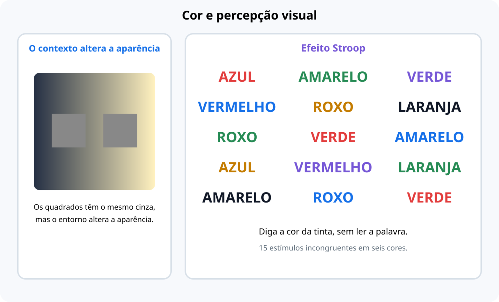
Síntese da aula
O modelo de raios reúne fenômenos que, à primeira vista, parecem separados. A propagação retilínea explica sombras, eclipses e a câmara escura; a geometria permite calcular alturas e tamanhos de imagens; e a interação entre iluminação e matéria explica as cores observadas. Antes de resolver um problema, identifique a fonte, o meio, o caminho da luz e o que o observador recebe.
Erros comuns
- Ano-luz e parsec são unidades de distância, não de tempo.
- Transparente não significa “invisível”: significa que transmite luz com pouca dispersão.
- A Lua é fonte secundária; ela reflete a luz solar.
- Sombra não é “um objeto preto”: é uma região que recebe pouca ou nenhuma luz da fonte considerada.
- Na câmara escura, a imagem é invertida; a relação de tamanhos exige unidades coerentes.
- RGB descreve mistura de luz; CMY descreve pigmentos. Não use a mesma regra para tela e tinta.
Exercícios de Fixação
- 1.1)
- A luz percorre aproximadamente \(3{,}0\times10^8\,\text{m}\) a cada segundo no vácuo. A distância percorrida em \(2{,}0\,\text{s}\) é:
- \(6{,}0\times10^8\,\text{m}\).
- \(1{,}5\times10^8\,\text{m}\).
- \(3{,}0\times10^8\,\text{m}\).
- \(6{,}0\times10^{10}\,\text{m}\).
- \(1{,}5\times10^{10}\,\text{m}\).
- 1.2)
- Uma estrela está a \(2{,}0\,\text{pc}\) da Terra. Usando \(1\,\text{pc}\approx3{,}26\,\text{al}\), sua distância é aproximadamente:
- \(0{,}61\,\text{al}\).
- \(1{,}63\,\text{al}\).
- \(3{,}26\,\text{al}\).
- \(6{,}52\,\text{al}\).
- \(9{,}78\,\text{al}\).
- 1.3)
- Qual alternativa associa corretamente o mecanismo de emissão ao exemplo?
- incandescência — vaga-lume.
- fluorescência — brasa.
- fosforescência — adesivo que continua brilhando após apagar a luz.
- quimioluminescência — Lua.
- bioluminescência — filamento aquecido.
- 1.4)
- Os raios luminosos que saem de uma pequena lâmpada e se afastam uns dos outros formam um feixe:
- convergente.
- divergente.
- paralelo.
- reversível.
- translúcido.
- 1.5)
- Dois fachos de lanterna se cruzam no ar e continuam suas trajetórias sem desviar um ao outro. A situação ilustra o princípio da:
- propagação curva da luz.
- fosforescência.
- reversibilidade.
- refração.
- independência dos raios luminosos.
- 1.6)
- Durante um eclipse solar, um observador situado na penumbra projetada pela Lua vê:
- eclipse solar parcial.
- eclipse solar total.
- eclipse lunar total.
- a Lua completamente iluminada.
- somente um eclipse anular.
- 1.7)
- Um poste de \(1{,}5\,\text{m}\) projeta uma sombra de \(2{,}0\,\text{m}\). No mesmo instante, um prédio projeta sombra de \(24\,\text{m}\). A altura do prédio é:
- \(12\,\text{m}\).
- \(16\,\text{m}\).
- \(17\,\text{m}\).
- \(24\,\text{m}\).
- \(18\,\text{m}\).
- 1.8)
- Uma lâmpada pontual está a \(3{,}0\,\text{m}\) do piso. Uma mesa quadrada de lado \(0{,}40\,\text{m}\) tem o tampo a \(1{,}0\,\text{m}\) do piso e está diretamente abaixo da lâmpada. O lado da sombra projetada no piso mede:
- \(0{,}20\,\text{m}\).
- \(0{,}40\,\text{m}\).
- \(0{,}60\,\text{m}\).
- \(0{,}80\,\text{m}\).
- \(1{,}20\,\text{m}\).
- 1.9)
- Uma árvore de \(3{,}0\,\text{m}\) está a \(12\,\text{m}\) de uma câmara escura. A distância do orifício ao anteparo é \(20\,\text{cm}\). A altura da imagem, em centímetros, é:
- \(2{,}5\).
- \(5{,}0\).
- \(20\).
- \(50\).
- \(0{,}5\).
- 1.10)
- Na síntese aditiva de luz, a combinação de luz vermelha e luz verde produz luz:
- ciano.
- magenta.
- azul.
- amarela.
- preta.
Atividade de encerramento — medindo o Sol por sombras
Objetivo
Usar a semelhança de triângulos para estimar a altura de um objeto da escola e discutir os limites do modelo.
Material e procedimento
- Em um local seguro e ensolarado, finque uma haste vertical de altura conhecida \(h\).
- Meça a sombra \(s\) da haste e a sombra \(S\) do objeto escolhido, no mesmo instante.
- Registre as medidas em metros e calcule \(H=hS/s\).
- Repita a medida por outro grupo e compare os resultados.
Discussão
- Por que as duas medidas devem ser feitas quase ao mesmo tempo?
- Que erros surgem se a haste não estiver vertical ou se o terreno for inclinado?
- Por que os raios solares podem ser considerados paralelos nessa atividade?
Materiais complementares
Referências
- HALLIDAY, David; RESNICK, Robert; WALKER, Jearl. Fundamentos de Física: óptica e física moderna. Rio de Janeiro: LTC.
- HEWITT, Paul G. Física Conceitual. Porto Alegre: Bookman.
- BONJORNO, José Roberto; RAMOS, Clinton; BONJORNO, Regina. Física: termologia, óptica e ondas. São Paulo: FTD.
- PROFª ALINE SÁ. Aula 01 — Introdução à Óptica. YouTube. Disponível em: https://www.youtube.com/watch?v=-kGpD70uuFc. Acesso em: 24 set. 2026.
- DESCOMPLICA. Princípios Básicos da Propagação da Luz. YouTube. Disponível em: https://www.youtube.com/watch?v=8bhOXgmO_h8. Acesso em: 24 set. 2026.
- GRINGER. Linear visible spectrum.svg. Wikimedia Commons, domínio público. Disponível em: https://commons.wikimedia.org/wiki/File:Linear_visible_spectrum.svg. Acesso em: 24 set. 2026.
- SAGREDO. Geometry of a Total Solar Eclipse.svg. Wikimedia Commons, domínio público. Disponível em: https://commons.wikimedia.org/wiki/File:Geometry_of_a_Total_Solar_Eclipse.svg. Acesso em: 24 set. 2026.
- Camera obscura.png. Encyclopédie (1763), Wikimedia Commons, domínio público. Disponível em: https://commons.wikimedia.org/wiki/File:Camera_obscura.png. Acesso em: 24 set. 2026.
- WIKIMEDIA COMMONS. AdditiveColorMixingII.png. Domínio público. Disponível em: https://commons.wikimedia.org/wiki/File:AdditiveColorMixingII.png. Acesso em: 24 set. 2026.
- SHARKD. CMYK subtractive color mixing.svg. Wikimedia Commons, CC0. Disponível em: https://commons.wikimedia.org/wiki/File:CMYK_subtractive_color_mixing.svg. Acesso em: 24 set. 2026.
- QARNOS. Diagram of umbra, penumbra & antumbra.png. Wikimedia Commons, domínio público. Disponível em: https://commons.wikimedia.org/wiki/File:Diagram_of_umbra,_penumbra_%26_antumbra.png. Acesso em: 24 set. 2026.
- OLIVEIRA, Jefferson Rodrigues de. Diagramas de meios ópticos e princípios da óptica geométrica. Elaboração própria, CC BY 4.0, 2026.
- OLIVEIRA, Jefferson Rodrigues de. Diagramas de paralaxe, feixes, sombras e percepção visual. Elaboração própria, CC BY 4.0, 2026.
Créditos das fotografias de fontes luminosas
- NASA/SDO. Sun disk.jpg. Domínio público. Wikimedia Commons.
- JON SULLIVAN. Candle flame (1).jpg. Domínio público. Wikimedia Commons.
- MUUSLIMABONU. Hot embers in night.jpg. CC0. Wikimedia Commons.
- GAURAVGGS. Incandescent Lamp Filament.jpg. CC BY-SA 4.0. Wikimedia Commons.
- PUBLIC-DOMAIN-IMAGE.COM. Fluorescent lights.jpg. Domínio público. Wikimedia Commons.
- MATTHEW BOWDEN. Fluorescent Lamp.jpg. Uso livre com atribuição. Wikimedia Commons.
- SPLARKA. Phosphorescent.jpg. Domínio público. Wikimedia Commons.
- FK1954. Phosphorescent pigments 4 min.jpg. Domínio público. Wikimedia Commons.
- TAVO ROMANN. Chemiluminescence.jpg. CC BY-SA 4.0. Wikimedia Commons.
- ALEKSANDER SOBOLEWSKI. Glowstick reaction.jpg. CC BY-SA 4.0. Wikimedia Commons.
- TERO KESKI-VALKAMA. Lampyris Noctiluca Female Firefly 3.jpg. CC0. Wikimedia Commons.
- W. CARTER. Mareel — Bioluminescence in Norra Grundsund harbor 2.jpg. CC0. Wikimedia Commons.
- NASA/JPL. Full moon.png. Domínio público. Wikimedia Commons.
- DOUG COLDWELL. OpenBook.jpg. CC BY-SA 3.0. Wikimedia Commons.
- PUBLICDOMAINPICTURES. Brick-wall-260030.jpg. CC0. Wikimedia Commons.